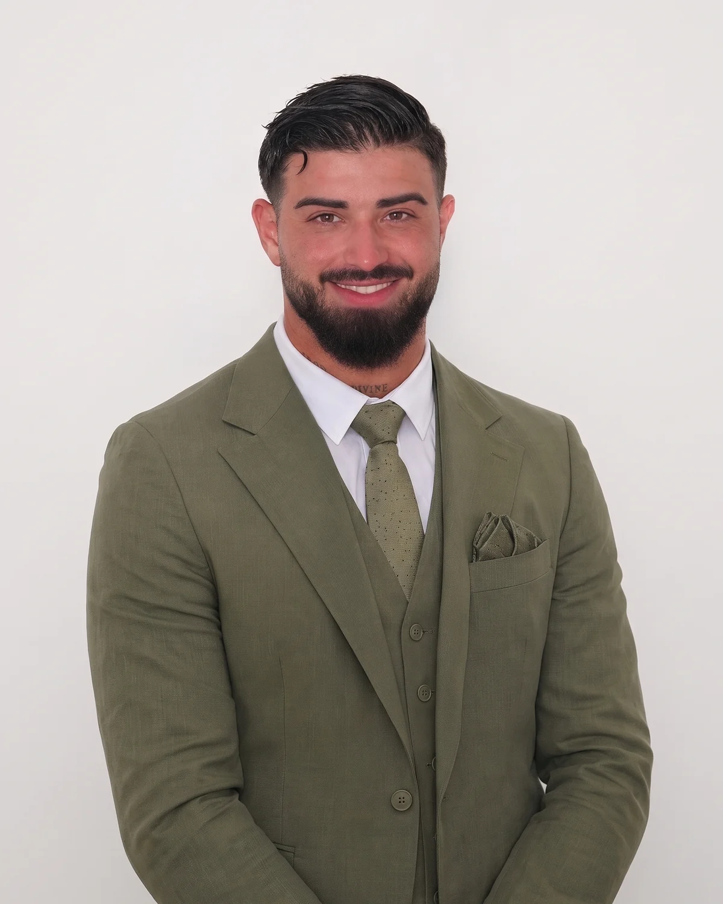

Über mich
Ein Ansprechpartner.Kein Agentur-Apparat.
Ich bin James Alves Da Silva, Gründer von Seenery Agency in Dübendorf. Ich arbeite mit Praxen und Studios, die nicht lauter, sondern besser gefunden werden wollen.

Meine Geschichte
Warum es Seenery gibt.
Bevor ich Seenery gegründet habe, war ich als Personal Trainer im Premium-Bereich tätig. Dort habe ich gelernt, was Menschen brauchen, um sich für jemanden zu entscheiden: Vertrauen, einen klaren Plan und Fortschritte, die man sieht. Genau das braucht auch eine Praxis, damit eine neue Patientin den ersten Termin bucht. Heute helfe ich Praxen und Studios in der Region Zürich, diesen ersten Eindruck online richtig zu machen.
Meine Wurzeln liegen in der Industriemechanik. Sechs Jahre lang habe ich dort gearbeitet, wo es auf Genauigkeit ankommt und kleine Fehler grosse Folgen haben. Diesen Anspruch nehme ich mit: Bei mir stimmen Öffnungszeiten, Adresse, Behandlungen und Telefonnummer überall überein, auf der Website, im Google-Profil und in den Antworten von ChatGPT. Für Google ist genau diese Einheitlichkeit ein wichtiges Signal.
Danach habe ich zwei Jahre im Verkauf gearbeitet. Dort habe ich gelernt, dass gutes Zuhören jedem Abschluss vorausgeht. Deshalb beginnt jedes Projekt bei mir mit Fragen statt mit Vorlagen: Welche Behandlungen sollen wachsen? Welche Patientinnen möchten Sie erreichen? Und was soll eine Frau fühlen, wenn sie Ihre Website zum ersten Mal auf dem Handy öffnet?
Ich baue selbst ein Unternehmen auf und weiss, wie sich Wachstum anfühlt, mit allen Fragen, die dazugehören. Genau das wünsche ich mir für meine Kundinnen und Kunden: mehr Menschen, die ihre Arbeit erleben, ein Team, das wachsen kann, und eine Agenda, die Wochen im Voraus gefüllt ist. Ohne dass Sie sich selbst um Technik, Texte und Google kümmern müssen.
«Wenn eine Praxis wächst, wächst ihr Team, und mehr Menschen finden zu der Behandlung, die sie suchen.»
James Alves Da Silva
Wie ich arbeite
Drei Dinge, auf die Sie zählen können.
Klare Zahlen statt Garantien
Keine Ranking-Garantien. Dafür jeden Monat ein Bericht und offene Worte, wenn etwas nicht funktioniert.
Entwurf in Tagen
Dank bewährter Bausteine sehen Sie Ihren Entwurf nach wenigen Tagen.
Direkt erreichbar
Sie sprechen immer mit mir. Per Telefon, Mail oder persönlich bei Ihnen in der Praxis.
Kurz und knapp
Seenery in Stichworten.
Gratis Sichtbarkeits-Check
Wie sichtbar ist Ihre Praxis heute?
Ich prüfe Google, ChatGPT und Ihre Website und zeige Ihnen das Ergebnis persönlich. Kostenlos und unverbindlich.

James Alves Da SilvaIch prüfe Ihre Praxis persönlich und melde mich direkt bei Ihnen.